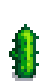

Higo chumbo
Ir a la navegación
Ir a la búsqueda
| Higo chumbo | |||||||||||||||||||||||||||||||
| El dulce fruto de la chumbera. | |||||||||||||||||||||||||||||||
| Información | |||||||||||||||||||||||||||||||
| Origen | Recolección • Oasis • Semillas de cactus | ||||||||||||||||||||||||||||||
| Ubicación | Desierto de Calico | ||||||||||||||||||||||||||||||
| Estación | |||||||||||||||||||||||||||||||
| Puntos de XP | 14 Agricultura XP | ||||||||||||||||||||||||||||||
| Energía / Salud |
|
||||||||||||||||||||||||||||||
|
|||||||||||||||||||||||||||||||
|
|||||||||||||||||||||||||||||||
El Higo chumbo es una fruta que se puede encontrar recolectando en el desierto en cualquier estación en el suelo. También se puede comprar los martes en el Oasis por  150o o en el Carro Ambulante por
150o o en el Carro Ambulante por  225 – 1.000o. El Higo chumbo también crece a partir de Semillas de cactus. Las Semillas de cactus reciben la bonificación de Labrador.
225 – 1.000o. El Higo chumbo también crece a partir de Semillas de cactus. Las Semillas de cactus reciben la bonificación de Labrador.
Fases
| Fase 1 | Fase 2 | Fase 3 | Fase 4 | Fase 5 | Cosecha | Post-cosecha |
|---|---|---|---|---|---|---|
 |
||||||
| 2 días | 2 días | 2 días | 3 días | 3 días | Total: 12 días | Sigue produciendo cada 3 días. |
Calendario de Crecimiento de Cultivos
| Base | ||||||
|---|---|---|---|---|---|---|
| Lu | Ma | Mi | Ju | Vi | Sá | Do |
| Comparación entre Agricultor y Fertilizante Acelerador | |||||||||||||||||||||||||||||||||||||||||||||||||||||||||||||||||||||||||||||||||||||||||||||||||||||||||||||||||||||||||||||||||
|---|---|---|---|---|---|---|---|---|---|---|---|---|---|---|---|---|---|---|---|---|---|---|---|---|---|---|---|---|---|---|---|---|---|---|---|---|---|---|---|---|---|---|---|---|---|---|---|---|---|---|---|---|---|---|---|---|---|---|---|---|---|---|---|---|---|---|---|---|---|---|---|---|---|---|---|---|---|---|---|---|---|---|---|---|---|---|---|---|---|---|---|---|---|---|---|---|---|---|---|---|---|---|---|---|---|---|---|---|---|---|---|---|---|---|---|---|---|---|---|---|---|---|---|---|---|---|---|---|---|
Regular
|
|
|
| ||||||||||||||||||||||||||||||||||||||||||||||||||||||||||||||||||||||||||||||||||||||||||||||||||||||||||||||||||||||||||||||
| *La tabla del 10% también se aplica a la Profesión Agricultor sin fertilizante. | |||||||||||||||||||||||||||||||||||||||||||||||||||||||||||||||||||||||||||||||||||||||||||||||||||||||||||||||||||||||||||||||||
|
|
| |||||||||||||||||||||||||||||||||||||||||||||||||||||||||||||||||||||||||||||||||||||||||||||||||||||||||||||||||||||||||||||||
Regalos
| Reacciones de Aldeanos
| |
|---|---|
| Le encanta | |
| Le gusta | |
| Neutral | |
| No le gusta | |
Lotes
- El Higo chumbo es una opción en el
 Lote Recolección Exótica en la Sala de manualidades.
Lote Recolección Exótica en la Sala de manualidades. - Puede ser una opción para el
 Lote Tinte (mezclado) en el Tablón de anuncios (mezclado).
Lote Tinte (mezclado) en el Tablón de anuncios (mezclado).
Recetas
El Higo chumbo no se usa en ninguna receta
Edificios
El Higo chumbo es un ítem necesario para comprar el Obelisco del desierto en la Torre del Mago
| Imagen | Nombre | Descripción | Coste | Tamaño |
|---|---|---|---|---|
 |
Obelisco del desierto | Te teletransporta al desierto. |
|
3x2 |
Sastrería
El Higo chumbo puede usarse en el carrete de la máquina de coser usando Tela en el alimentador para crear una Camiseta de los 80.
- Masculina:

- Femenina:

También puede ser utilizado como tinte de color verde en la máquina de coser o en los tarros de tinta para cualquier prenda de vestir (teñible).
Misiones
- El Higo chumbo puede ser solicitado aleatoriamente despues de completar todos los lotes de la Caja fuerte, en la tabla de anuncios "Necesito ayuda" afuera de la Tienda local Pierre's por una recompensa de
 225o y 150 puntos de Amistad.
225o y 150 puntos de Amistad. - 3 Higos chumbos pueden ser solicitados por el Lenguado o la Carpa escorpión en el Estanque de peces para incrementar la capacidad del estanque de 3 a 5 peces
Historial
- 1.3.27: Se agrega la opción de crecimiento mediante Semillas de cactus.
- 1.4: Se agrega como ítem necesario para la compra del Obelisco del desierto. Se agrega a las misiones de "Necesito ayuda". Ahora puede usarse en la máquina de coser. Ahora puede ser solicitado en una misión para el Estanque de peces.
- 1.5: ahora es posible obtener Higo chumbo de calidad iridio usando Fertilizante de lujo.
| Cultivos | |
|---|---|
| Primavera | Ajo • Allium azul • Arroz sin moler • Chirivía • Col rizada • Coliflor • Fresa • Grano de café • Judía verde • Patata • Ruibarbo • Tulipán • Zanahoria |
| Verano | Amapola • Arándano • Carambola • Calabaza amarilla • Chile • Girasol • Grano de café • Lentejuela de verano • Lombarda • Lúpulo • Maíz • Melón • Rábano • Tomate • Trigo |
| Otoño | Alcachofa • Amaranto • Berenjena • Brócoli • Calabaza • Col china • Girasol • Grosella • Maíz • Ñame • Remolacha • Rosa hada • Trigo • Uva |
| Invierno | Melón de polvo |
| Especial | Baya de gema dulce • Fruta milenaria • Fruto Qi • Higo chumbo • Hojas de té • Piña (fruta) • Raíz de taro |